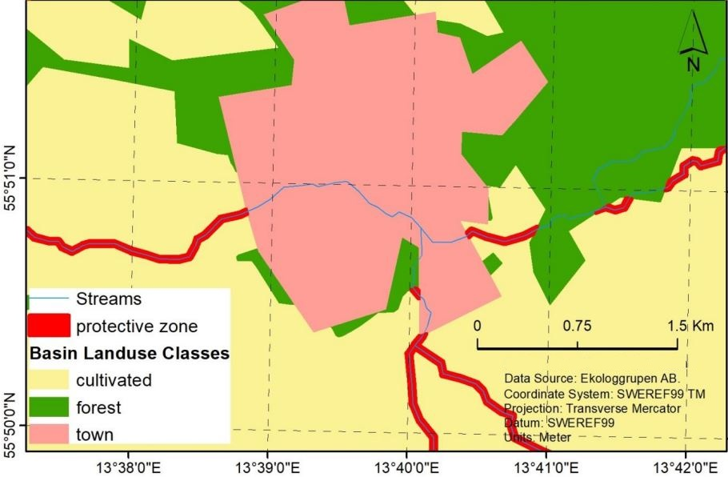

Programming
Python, R, MATLAB
Born in Athens, Greece on 11/06/1993.
BSc in Geography - Harokopion University of Athens, Greece (2018)
MSc in Geomatics - Lund University, Sweden (2020).
GIS, Remote Sensing, Spatial Analysis, Programming, Database Management, Web-Development.
My main research interest is to develop and refine existing satellite remote sensing methods for environmental modelling. More specifically, my current research interest is the use of different satellite sensor data (e.g. Sentinel-2, Landsat, MODIS) for detecting and mapping natural and human-induced changes based on time series information in order to assess the impacts of climate change and urbanization on ecosystems.
Monitoring crop growth is crucial for applying agronomic practices efficiently. This study focus on spring barley parcels with available in-situ crop growth stage measurements (recorded in Zadoks scale) in south-central Sweden over the period of 2017 – 2019. The aim was to detect three specific crop growth stages of spring barley that are crucial for applying external inputs (e.g. fungicides applications): (i) first node detectable (31DC), (ii) flag leaf ligule just visible (39DC), and (iii) first spikelet of inflorescence just visible (51DC). We describe a simple empirical approach based on Normalized Difference Vegetation Index (NDVI) and Enhanced Vegetation Index 2 (EVI2) Sentinel-2 time-series. TIMESAT 4.0 was deployed to reconstruct the NDVI and EVI2 trajectories using the Double Logistic (DL) smoothing function. The available in-situ crop growth stage measurements were used to optimize the dynamic thresholds (% of the amplitude of the season) for detecting the different crop growth stages of interest in the time-series of the vegetation indices. The optimal thresholds for the stages 31DC, 39DC and 51DC based on NDVI were 74%, 92%, and 99% respectively; for EVI2 the optimal global thresholds were 70% (31DC), 91% (39DC), and 99% (51DC). The results suggest that EVI2 was more accurate than NDVI for detecting the crop growth stages of interest in terms of R2 and RMSE. Overall, the study showed the feasibility of using Sentinel-2 in crop phenology studies and demonstrated its potential uses and inaccuracies regarding the detection of three specific crop growth stages of spring barley that are important in agronomic management.
In this thesis, an effort to predict mean annual soil loss has been conducted for the watershed of Xerias (Peloponnese). For the prediction, the Revised Universal Soil Loss Equation (RUSLE) model, a modification of the USLE model, has been adopted in a Geographical Information System framework. The RUSLE factors were calculated (in the form of raster layers) for the area of interest. The R-factor was calculated from monthly and annual precipitation data. The K-factor was estimated using soil maps available from the Soil Geographical Data Base of Europe (SGDBE) in conjunction with the LUCAS database. The LS-factor was calculated from a 30m digital elevation model (ASTER DEM). The C-factor was calculated using the Corine 2000 database. The P-factor in absence of data was set to 1. The results showed that in more than 85% of the study area the mean annual soil loss amounts were less than 6.8 t ha−1yr−1 while the mean annual soil loss is predicted up to 3.52 t ha−1yr−1 . For the reliability assessment of the results, a comparison has been made between the results of this thesis with the results of the European Commission researches. This comparison showed that the classes of soil loss estimations in 85.6% of the study area fell within the range of soil loss classes obtained from European Commission researches. In general, it can be said that the reliability of the used data and used methods is too low and too many uncertainties exist for a reliable calculation of soil loss amounts in the watershed of Xerias using the RUSLE model. Nonetheless, the results of this thesis could be proven useful for the identification of the spatial patterns of soil erosion, which can make these methods highly useful, since such information is critical for erosion control and thus for the protection of the environment.
This projected focused on retrieving the phenology parameters at 8-day time steps between 1999 and 2017 covering the south-west part of Europe by utilising optical remote sensing techniques and more specifically by using the vegetation index named Plant Phenology Index (PPI) generated with MODIS data. With the utilization of remote sensing techniques, this projects reveals the phenology parameters like start of the season (SOS), end of the season (EOS), and length of season (LOS) over most parts of south-east part of Europe.
This project aimed to create a thematic map (land cover) for Lund municipality by using satellite data (Sentinel-2A) along with in situ measurements. Two classification methods are used in order to classify the land cover types in Lund municipality, named ANN and minimum distance. The highest classification accuracy was obtained by ANN which is 54% compared to minimum distance classifier. It was concluded that using ANN method is a better option than minimum distance with respect to accuracy. Furthermore, it is found that Minimum distance classifier is a simpler method and less time consuming but should not be preferred for applications where the accuracy of the classification is critical.
The concept of accessibility plays an important role in many of our conscious choices: How far are you willing to walk to buy a lunch? How much time are you willing to spend to commute to a new working place? The accessibility has been modelled here in the form of travel time to hospitals and markets by using a raster-based cost distance analysis as opposed to a vector-based network analysis. Results with a reasonable accuracy were obtained from the service area analysis. There were certain areas that were modelled poorly due to big gaps in between roads in rural areas or areas with an incomplete road network. Also, areas in mountainous areas with steep slopes were modelled differently.
Here is a Python/ArcGIS-ArcToolbox to automate the multi-temporal calculation of a river’s sinuosity index. The sinuosity index is also known as just sinuosity and describes the tendency of the rivers to meander (i.e. to deviate from the straight flow), and it is defined as the total length of the river (L) divided by the straight distance (D) between the starting and ending point of the river. The utilization of arcpy package can be proven time efficient when it comes to the automation of tasks with a time demanding workflow. In such a case, the developed toolbox can be used to assess the temporal changes in the sinuosity values of a river in an automated manner, but the results should always interpreted with critical thinking.
Nutrient leaching has many adverse effects to the environment such as the acceleration of the eutrophication process. This project demonstrates the use of spatial data in a GIS in order to provide solutions to environmental problems in a time saving way. The effects of factors such as land use and point sources on nutrient leaching in the Rönne å drainage basin are examined and the results are compared with available field measurements. Additionally, the report assess the financial cost of constructing protective zones coupled with its distribution among municipalities. 
This projected aimed to identify the most suitable location for the construction of wind power plant for the area of South-West Scania (parts of Lund and Eslöv municipalities). The criteria that were taken into account during the suitability analysis were suggested by the aforementioned municipalities. Such criteria are the distance from built up area, houses and roads in addition to the potential wind energy (related with the landscape) and the land uses in the study area. The most suitable site is located in the northeast part of the study area, with an area of 6.25 Ha and mean PWI of 8.50.
A cost approximation for road maintenance in Iran and more specifically in Gilan, a rice producing province, has been performed and evaluated. The high maintenance costs for roads in Gilan can be explained by the distribution of cost factors within the province: 1) Extensive agriculture and high population density lead to intensive road use 2) The high precipitation in Gilan damages the road infrastructure 3) Prevalent Gleysols that are prone to subsidence.
This project focused on creating a web map service that allows users to evaluate climate variables and relevant features in Sweden. Additionally, it will allow users to compare these parameters against satellite imagery. The service aims to present the spatial information in a cartographically meaningful way that should be intuitive to use.
Google Earth Engline provides a simple, quick, and powerful platform for handling remotely sendsed data using JavaScript. Here is the demonstration of Classification And Regression Trees (CART) classifier as a supervised learning that uses a training sample to classify Landsat 8 images into land cover classes for Uppsala, Sweden.
This project is about creating a 3D Augmented Reality android application. This application was created in Unity where the scripts were written in C#. This project aimed to demonstrate the use of augmented reality combined with spatial data and some of its possible uses in data visualisation.
Sweden